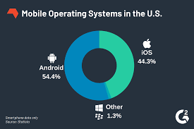

A mobile operating system (OS) is software that allows smartphones, tablets and other devices to run applications and programs. A mobile OS provides an interface between the device's hardware components and its software functions. It typically starts when a device powers on, presenting a screen with icons or tiles that show information and provide application access. Mobile operating systems also manage cellular and wireless network connectivity and phone access. Millions of people use mobile operating systems worldwide, powering a wide range of devices, from smartphones to tablets and wearable technology. These systems offer users a wide selection of features, including calling and messaging, internet and cellular data connectivity, multitasking capabilities, interactive user interfaces and access to a wide range of third-party applications and services to enhance the user experience even further.
